有一个特别的数，可以用“有八无八”四个字来描写它。
“有八”，是说这个数有八位数字；“无八”，是说从数字1到数字9顺次出场，其中唯独没有数字8。
“有”和“无”结合，可知这个数是12345679。
这个数的妙处，可以从下面的等式里看出：
12345679×9=111111111。
原来的数很有规律，乘过9以后，得到的数更有规律，变成9个1了。
刚开始学习用珠算或笔算做乘法时，老师和学生都喜欢下面一组练习题：
12345679×9=111111111，
12345679×18=222222222，
12345679×27=333333333，
12345679×36=444444444，
12345679×45=555555555，
12345679×54=666666666，
12345679×63=777777777，
12345679×72=888888888，
12345679×81=999999999。
这些题目的被乘数和乘数都很容易记住，乘积更容易记住。反复做这几题，用不着抄题目，也无需对答案，非常方便。
老师在黑板上写了一道奇怪的等式，让大家思考。
老师写在黑板上的式子是：
123456798=100。
其中，等号右边是100，左边是从1到9，但是8和9的位置对调，9在前，8在后。式子下面还写了加、减、乘、除符号。题目的要求是，不改变数字排列顺序，在左边适当添上一些运算符号也可以加括号，使它变成正确的等式。
一种最容易想到的思考方法是从近处往远处联想。原式左边最靠近答数100的是98，因此只要用前面的1至7运算得出2，就能满足要求。从这条路想下去，得到等式：
12÷3+4-5+6-7+98=100。
另一种常用思考方法是从远处向近处靠拢。观察左边数字串123456798的开头部分，截取最前三位123，它与答数100比较接近。从123再设法向100靠拢，得到算式：
123+45-67-9+8=100。
在下列各式的左边添进适当的数学符号，使等号两边变成相等。
321=9，
4321=9，
54321=9，
654321=9，
7654321=9，
87654321=9，
987654321=9。
可用的办法很多，下面是一组参考答案。
3×（2+1）=9，
4+3+2×1=9，
54÷3÷2÷1=9，
（6+54）÷3÷2-1=9，
（76+5）÷（4×3-2-1）=9，
（87-6-54）÷3×（2-1）=9，
（98÷7-6）×5÷4-3+2×1=9。
人们常说“九九八十一”，这是一句乘法口诀。
在特定的情形下，也可以说“九九二千”，因为这句话概括了一道数学题：
用9个9和适当的数学符号组成算式，使计算结果等于2000。
可以先用6个9组成两个数999、999，两数相加，比2000还差2，只需用剩下的3个9得到2就行了。由此得到等式：
999+999+（9+9）÷9=2000。
能不能把“九九二千”换成“八九二千”？
就是说，能否用8个9和适当的数学符号组成算式，使计算结果等于2000呢？
可以从其中的3个9得到2，从另外5个9得到1000，组成下面的等式：
（999+9÷9）×[（9+9）÷9]=2000。
用四个4和适当的数学符号，可以分别得到1、2、3、4、5、6、7、8、9、10。例如：
4÷4+4-4=1，
4÷4+4÷4=2，
（4+4+4）÷4=3，
4+4×（4-4）=4，
（4×4+4）÷4=5，
（4+4）÷4+4=6，
4+4-4÷4=7，
4+4+4-4=8，
4÷4+4+4=9，
（44-4）÷4=10。
仔细观察上面十个等式，就会发现它们是分别按照几种不同思路组成的。这一方面是为了适当变化，增加趣味，另一方面也由于只用一种思路不能解决全部问题。
即使是空闲时做个这样的数学小游戏，也不宜抱着单一思路强攻硬上。在平时的学习和工作中更需注意针对问题特点，采取灵活多变的思路。
小华到商店买练习簿，每本3角钱，共买9本，应该付款2元7角。
服务员问：“您有零钱吗？”
小华说，“我带的都是零钱，5角一张。”
服务员说：“真不凑巧，您没有2角一张的，我的零钱反而都是2角的，没有1角的。”
有没有办法能把零钱找开呢？
由于：
27=35-8=5×7-2×4，
只要由小华付出7张5角的，服务员找回4张2角的，就能解决找零钱的麻烦。
“三九”是冬至以后第三个九天，寒冷的1月中旬。“九三”是九月三日，秋高气爽，景色宜人。把“三”字和“九”字对调，“三九”就变成了“九三”。
有没有什么数学式子，能把三九变成九三呢？
随手就能写出一个：3+9=9+3。
做加法时，三九十二，九三也是十二。
这太容易，加法交换律众所周知。还有呢？
好吧，不用加法，改用乘法：3×9=9×3。
做乘法时，三九二十七，九三还是二十七。
乘法交换律也熟悉透了。还有没有？
还要另外的三九？另外的九三？
一定要另外的，新鲜些的。
不容易呀。如果有点儿拖泥带水，请多包涵！
没问题，式子里夹点其他东西无所谓，但一定要有新意。
试试看吧。999有三个数字9，算不算三九？也算。九三呢？
333333333有九个数字3，算不算九三？
也算。怎么变过去？一定要用数学式子！
变变变变……变！出来了：
999×333667=333333333。
通过乘以333667，把三个9变成了九个3。
按照规定，两张带有记号△的卡片可以换一张有□的卡片，两张有□的卡片换一张有☆的卡片，两张有☆的卡片换一张有○的卡片，两张有○的卡片换一张有◎的卡片。
一个人有6张卡片，上面的记号分别是：
△ △ □ ☆ ☆ ○
他去交换卡片，希望卡片的张数越少越好。换卡后，他身边还有几张卡片？上面是些什么图形？
借用数学符号，可以将换卡过程表示如下：
（△+△）+□+（☆+☆）+○=□+□+○+○=☆+◎。
由此可见，换卡后还剩两张卡片，上面的图形分别是☆和◎。
这题目很简单，一会儿就把卡片换好了。但是这题目又不简单，因为它后面有背景。
实际上，这个“两张换一张”的卡片问题，是以二进位制为背景的。
要使总的卡片张数最少，每种卡片留下的张数只能是0或1，相当于在二进位制里只用两个数字0和1。
每两张同一种的卡片换一张高一级的卡片，相当于二进位制里同一位上的两个单位合并起来向上面一位进1，“逢二进一”。
本题中每一张带有符号的卡片，相当于一个二进位制的数，对应关系如下：
△=1，
□=10，
☆=100，
○=1000，
◎=10000。
原来的卡片，有两张△，一张□，两张☆和一张○，可以用二进位制求它们的总和，得到：
（1+1）+10+（100+100）+1000=10+10+1000+1000
=100+10000
=10100。
最后，将卡片记号排名榜和二进位制答数对照：
◎ ○ ☆ □ △
1 0 1 0 0
在◎和☆的位置上是数字1，其他位置上都是0。由此可见，换卡片的结果，最后保留1张◎卡和1张☆卡。
在生活中，很多场合都只有两种状态换来换去，例如灯泡的亮和熄，风扇叶的转和停，门铃的叮咚和寂静，都是由一个开关控制，有电送过去就工作，没有电送过去就休息。
在数学上，可以用二进位制的数字1和0分别表示有和无，二进位制数的每一位相当于一个转换有无的开关。所以二进位制可以在很多地方施展身手。特别是电子计算机，在那里面，二进位制可算是大显神通了。
在下面的算式里，共有十个空白方框。把0、1、2、…、9这十个不同数字全部填进去，使每个数字各自占据一个方框（“各据一方”），并且得到三个正确等式，应该怎样填？
□+□=□
□+□=□
□×□=□□
容易验证，下面的填法完全满足要求：
1+7=8
3+6=9
4×5=20
怎么知道能这样填？有没有其他不同填法呢？
由于十个方框里的数字各不相同，0又不能做二位数的首位数字，所以0只能填在第三个等式里的最后一个方框，作为二位数的末位数字。
由此推出，第三式的左边一定有一个方框里填5，另一个填写偶数非零数字，可能是2、4、6、8中的某一个，并且所填的这个偶数数字的一半，恰好等于等号右边乘积的十位数字。
0和5已经有了确定的位置，剩下的数字是1、2、3、4、6、7、8、9。要把这八个数字分成三组，前两组各有三个数字，并且其中最大的等于另两个的和；最后一组包含两个数字，其中一个等于另一个的两倍。不考虑顺序，唯一可能的分组方法是：
（1，7，8），（3，6，9），（2，4）。
这样就得到上面写出的填法。
两个加法算式可以互相交换位置，加号和乘号前后的两个数可以交换位置，这些简单变形可以不加区别。在这种意义上，本题只有唯一的答案。
从上面这道题，可以变化出一道新题。
减法是加法的逆运算。从一个加法算式3+6=9，可以得到两个减法算式9-3=6，9-6=3。
所以，知道怎样解答上面这道题目，也就会解答从它变形得到的下面的问题：
把0、1、2、…9这十个不同数字全部填进下面的空格，使每个数字各占一格，并且得到三个正确等式，应该怎样填？
□+□=□
□-□=□
□×□=□□
变形以后的题目，有加、有减、有乘，变化更多，答案也从1个变成4个了。
幼儿园的老师们捧着3只纸箱，给大班的小朋友送来好吃的东西。
大纸箱里有74只桔子，中等大小的纸箱里有200块饼干，小纸箱里有120颗糖。平均分发完毕，每种小食品都剩下些零头，纸箱里还有2只桔子、12颗糖和20块饼干。大班里共有多少位小朋友？
带来74只桔子，还剩2只，发下去的是72只。可见大班小朋友的人数是72的约数。
带来200块饼干，还剩20块，发下去的是180块。可见大班小朋友的人数也是180的约数。
带来120颗糖，还剩12颗，发下去的是108颗。可见大班小朋友的人数又是108的约数。
所以，大班小朋友的人数是72、180和108的公约数。
3个数72、180和108的最大公约数是36，其余公约数都不超过18，由于发到后来剩下的零头里有20块饼干，可见小朋友的人数大于20。所以大班的小朋友共有36人。
幸亏饼干剩得多，如果剩下的饼干只有17块，就不能确定人数是36个还是18个了。
某数除以2余1，除以3余2，除以4余3，除以5余4，求某数。
上面这道趣题，现今常能遇到。不过它的岁数已经不小，早在1703年俄国人马格尼茨基的《算术》书中就已出现，至今将近300年，讲数学的人还是喜欢拿它做习题或例题，学数学的人解起它来还是觉得津津有味。
从题目的内容上看，这个“某数”总是慢一拍：除以2余1，余数比除数少1；除以3余2，除以4余3，除以5余4，每次的余数仍然都是比除数少1，少了1就麻烦，要是不缺少这个1，每次就都能整除，那多方便！
对呀，让某数加上1，结果就能被2整除、被3整除、被4整除、被5整除。因而，某数加1以后，是2、3、4、5的公倍数。
2、3、4、5的最小公倍数是60，所以某数加1是60的倍数。
由此推出，某数等于60的任一倍数减1，所以某数可取无穷多个值，其中最小的值是59。
球赛中要“换人”，解数学题时要“换元”。在本题中，某数总是慢一拍，叫它暂时到球场外边长板凳上坐下来歇歇，把“某数加1”换上去取胜。解题中的换元和球场上的换人是一个道理。
游艺晚会常有猜谜项目。传统形式是张灯结彩，在每张灯的下面悬挂一张彩色纸条，写着一条谜语，叫做灯谜。随着猜谜活动的普及，形式也简化了，可以在活动室或教室里拉几排铅丝，每根铅丝上并排挂着若干条谜语，猜中了有一点糖果或书签之类的小纪念品，玩得很开心。
因为每个人对数字都很熟悉，所以常有一些谜语和数字有联系。先看几个例子：
1.人有我大，天没有我大。（打一字）
“打一字”就是请你猜一个字。“人有我大”，可以理解成人有了它就变大了；“天没有我大”，理解成天没有它也变大了。可见这个字是“一”，因为“人”字拦腰有一横变成“大”字，“天”字没有了头顶上一横也变成“大”字。
2.上在下，下在上，卡在中间。（打一字）
“上”字里在下部的是一横，“下”字里在上部的也是一横，“卡”字里在中间的还是一横。所以谜底是一横写成的“一”字。
3.天有地没有，工有农没有。（打一字）
天字里有两横，地字里没有两横；工字里有两横，农字里没有两横。所以谜底是两横组成的“二”字。
4.增白皂。（打一字）
增白皂是一种肥皂，用它洗衣服可以使白色的更加洁白。什么字增添了“白”字上去就变成“皂”字呢？当然是“七”字了。可见谜底是“七”。
上面几个谜语，都是猜一个字，猜出来的字是一个数字。更多的谜语是在谜面中出现数量关系，谜底就不一定和数字有关了，也来看几个例子：
5.保留一半，放弃一半。（打一字）
把“保”字留下来一半，“放”字舍弃掉一半，剩下的两个一半拼在一起，能组成什么字呢？只能是“仿”字。谜底是“仿”。
6.加一倍不少，加一横不好。（打一字）
不少就是“多”，“多”字的一半是“夕”字。一个“夕”字，加一倍，就是再来一个“夕”字，两个“夕”字堆起来，变成“多”字；一个“夕”字，加上一横，变成“歹”字，那就不好了。可见谜底是“夕”。在节日前夕猜谜，特别是除夕那天猜谜，猜到“夕”字，正合时宜。
7.左边加一是一千，右边减一是一千。（打一字）
用还原的方法来猜这个字。从“千”字精简掉“一”字，剩下一撇一直，是一个单人旁，组成这个字的左边；在“千”字的基础上增加“一”字，变成“壬”字，组成这个字的右边。所以要猜的字是“任”。
8.看上十一口，看下二十口，猜出这个字，笑得难合口。（打一字）
“二十”简称为“廿”（读成“niàn”），手写时，通常只写一横带两短竖。
要猜的这个字，上面顺次是十、一、口；下面顺次是廿、口。连起来看，是一个“喜”字。猜出答案是喜，心里欢喜，面露笑容，嘴巴都合不拢了。
9.十个加十个，还是十个；十个减十个，还是十个。（打一物）
十个第一种东西，加上十个第二种东西，变成第三种东西，数量还是十个。这是讲的是戴手套：手有十个指头，手套也有十个指头，带着手套的手还是十个指头。所以，戴手套的过程可以描写成“十个加十个，还是十个”。反过来，摘手套则可说成“十个减十个，还是十个”。要猜的这件物品是手套。
10.一口能吞二泉三江四海五湖水，孤胆敢进十方百姓千家万户门。（打一物）
一件物品，有一个口，不管五湖四海三江二泉，哪里的水都能喝；有一个胆，四面八方千家万户老百姓的门都敢进。这是什么？是热水瓶。热水瓶有一个瓶胆，一个瓶口，家家用，户户有。这个谜语，原先是几位作者为一家热水瓶厂写的对联，上联用数字一二三四五，下联用数字个十百千万，描绘产品，但不点明，比明说更生动，更吸引人。
1.一加一不是二。（打一字）
“一”字、加号“+”、再来一个“一”字，组合在一起，得到的字不是“二”，而是“王”。谜底是“王”。
2.一减一不是零。（打一字）
“一”字、减号“-”、再来一个“一”字，组合在一起，得到的字不是“零”，而是“三”。谜底是“三”。
3.八分之七。（打一成语）
“八分之七”用数学符号写出来，把数字7写在分数线上面，8写在分数线下面，谜底是成语“七上八下”。
在上面这些谜语里，用一些很简单的数学知识，对谜语的文字作出新的理解，可以帮助猜出答案。
另外一类数学谜语，谜底是数学名词。还是来看几个例子：
4.七六五四三二一。（打一数学名词）
平常报数目，是从小到大顺着数，就像流行歌曲里唱的，“一二三四五六七，我的朋友在哪里”。现在他说“七六五四三二一”，是从大到小，倒过来数了，所以谜底是“倒数”。
5.讨价还价。（打一数学名词）
买东西讨价还价，要经过反复协商，才能达成双方都同意的钱数。这种协商钱数的过程，可以戏称为“商数”。谜底是“商数”。
6.你盼着我，我盼着你。（打一数学名词）
“你盼着我”，是你在等候我；“我盼着你”，是我在等候你。两人互相等候，可谓“相等”。谜底是“相等”。
7.成绩是多少？（打二数学名词）
学习成绩是用得分的数目计算的。问“多少”，可以换一个说法，改问：“几何？”在中国古代数学书里，问一种物品有多少个，总是问：“物有几何？”直到现在，有些地区的方言里，买东西问价钱，还是说：“几何？”所以，问“成绩多少”，等于是问：“分数几何？”谜底是两个数学名词：分数、几何。
有一堆夹心糖，如果平均分成8份，最后多余2块；如果平均分成9份，最后多余3块；如果平均分成10份，最后多余4块。这堆糖至少有多少块？
本题的数字虽然多些，却很有规律：三次分糖的份数分别是8、9、10，顺次加1；每次余下糖的块数分别是2、3、4，也是顺次加1。
由于：
8-2=9-3=10-4=6
所以问题的条件可以换一种说法：如果平均分成8份，就会有一份缺6块；如果平均分成9份，也会有一份缺6块；如果平均分成10份，还是有一份缺6块。
既然每次都缺6块，不妨暂借6块糖来，放进这堆糖里，那么糖的总数就是8的倍数，也是9的倍数，又是10的倍数。
8、9、10的最小公倍数是：
8×9×5=360
因而这堆糖加上6块以后，至少是360块。
所以最后得到，这堆糖至少有354块。
暑假里，小刚和几位同学约好，8月8日一起回学校看老师。回到家里，忽然想起，老师说过，每逢双休日，他们全家轮流到父母和岳父母家里去看望老人家。8月8日是不是星期六？是不是星期天？但愿不是。
8月8日是星期几呢？实在想不起来。只记得8月份有四对半双休日：4个星期天，5个星期六。
奇怪呀。星期天总是紧跟在星期六后面，可是在8月份，星期六有5个，星期天却只有4个。怎么有一个星期天跟得不紧，竟然跟丢了呢？
紧跟还是不会错的，一定是被挤到界外去了。8月份最后一天刚好是星期六，紧接在它后面的星期天就不是8月的，而是9月的了。
照这样看，8月31日一定是星期六。往前21天，是8月10日，还是星期六。再往前去两天，是8月8日，星期四。
这样就放心了，和同学们约好的8月8日这天，不是星期六，也不是星期天，这正是所希望的。
下面的式子里，共有5个6，在每两个相邻的6的中间都有一个空框：
6□6□6□6□6
把加、减、乘、除四个运算符号分别填进这四个空框，要使运算得数最大，应该怎样填？
因为四种算术运算都有，要使结果最大，只需使减去的数目最小。所以可采用下面的填法：
6×6+6-6÷6=41
按照原来的题意，只能填加减乘除符号，并且四个符号全要填，不能另添括号。如果允许添括号，可以得到更大的运算结果，例如：
6×（6+6）-6÷6=71
有五个木块，颜色分别是红的、白的、黑的、绿的和紫的，大小各不相同。已知其中绿木块比红木块小，黑木块比紫木块大但比绿木块小，紫木块比白木块大，红木块比白木块大。请按照从小到大的顺序，把这几块木块排成一行。
本题中的条件比较多，可以先把每个条件涉及的木块一律按从小到大顺序，各自排成一行，然后汇总。
从条件得到：
绿＜红，
紫＜黑＜绿，
白＜紫，
白＜红。
综合以上各个条件，得到：
白＜紫＜黑＜绿＜红。
所以，五个木块从小到大，顺次是：白木块，紫木块，黑木块，绿木块，红木块。
解答本题的关键，先将杂乱的条件根据需要按统一标准整理。条理清晰了，问题也就迎刃而解了。数学需要条理性，所以数学也特别能锻炼人的条理性。
凡是需要付现金的地方，都有可能需要找零钱。在很多次找零钱的机会里，总有可能出些差错。所以，无论是人家找钱给自己，还是自己找钱给人家，都需要验算，看看找的数目对不对。
在农贸市场里，一位妇女经过几轮讨价还价，把每斤（1斤=500克）青菜的价钱从8角压低到6角。买3斤，拿出一张5元的人民币。卖菜人接过后，从一叠零钱里抽出两张1元的和两张1角的，对她说：“这是一元钱、两元钱、两元一、两元二，找给你两元二角，数数看，对不对？”那位妇女接过钱来，再数一遍，不多不少，正好2元2角，说声“不错”，提起菜篮高高兴兴走了。
究竟错不错呢？
卖菜人嘴里说的是“找给你两块二角”，手里拿出来的也是两块二角，这两个数目完全一致，可以说是“不错”。
但是算一算账，到底应该找回多少钱呢？
每斤6角，买3斤应该付1元8角，拿出5元，应该找回的不是2元2角，而是3元2角：
5-0.6×3=5-1.8=3.2（元）。
可见零钱找错了，少找了1元。还价的战果全部丢下水，反而多花了钱。
也有个别时候，买东西的人应该付1元8角，拿出5元，卖东西的人找出来4元2角，多找了1元。
其实只要这样想：
1元8角，就是2元少2角。
如果是整数目2元，那么给5元，找回3元。
现在比2元少2角，找回的就要比3元多2角。
如果实际找出的是2元多，或者是4元多，肯定找得不对。
算账的时候，如果一下子就考虑得很细很细，有可能“抓住芝麻，丢掉西瓜”，因小失大。验算要先抓“西瓜”，算大账，看看得数的首位数字对不对。如果大数目对头，有时间再抓一抓“芝麻”，算算细账；实在没有时间就算了，小数目纵有误差，损失也微乎其微。
9+6=3，这似乎是荒谬的，但它确实是在标有1~12的钟面上进行计算的结果。因为从钟面上看，9点过6小时，时钟恰好指向3点，所以9+6=3；另外，6点过7小时是1点，所以6+7=1；因为8点过8小时是4点，所以8+8=4；因为3点过12小时仍是3点，所以有3+12=3。
钟面上的加法的计算规律是：两数之和小于12，和就是所求的钟点数；两数之和大于12，把和减去12就是所求的钟点数；一个数加上12，原来的数就是所求的钟点数。钟面上不仅可以做加法，也可以做减法，甚至做乘法，它们都能得到有趣的结果。
与加法类似，钟面上减法的计算规律是：被减数大于减数，差就是所求的钟点数；被减数小于减数，就在被减数上加12再减，差就是所求的钟点数；一个数减去12，差就是原来这个数。
钟面上乘法的计算规律是：两数之积小于或等于12，积就是钟点数；两数之积大于12，从积里减去12的倍数，使差小于12，这个差就是所求的钟点数；任何数乘以12，所求的钟点数都是12。
小朋友，你能根据钟面上的计算规律，计算下列各数吗？
加法：（1）6+2（2）6+7（3）2+9（4）9+9
减法：（1）8-5（2）9-4（3）1-4（4）8-12
乘法：（1）4×2（2）6×2（3）7×4（4）4×7
到小商店买一件衣服，应付款28元8角。掏出一张100元的大票子，递过去，等候找钱。
女店主接过百元钞票，迎着亮光验一验水印，然后收起来，开始找钱。她不用算盘，也不用电子计算器，全凭口算。
只见她不慌不忙，先拿出两张1角的零票，一张一张地往柜台上放，同时嘴里报数：9角，1元，29元了！
然后拿出一张1元的放上柜台，说：30元了。
接着再拿出两张10元面额的钱，一张一张地放到柜台上，同时嘴里报数：40元，50元。
最后拿出一张50元的大票子，笑嘻嘻地说：总共100元钱，对吧？
她根本就不需要计算应该共计找给你多少钱，而是利用尾数凑整的办法，先把角凑整成元，再把元凑整成10元，最后把10元凑整成100元。生活经验告诉她，这样找钱，肯定错不了。
在学校里做这种找零钱的问题，是用减法：
100-28.8=71.2（元）
如果是老师在课堂上提问，只许口答，不让动笔，怎样能算得又快又准确呢？可以向生活学习，把28.8凑整成30，差数是1.2，因而：
100-28.8=100-30+1.2=71.2
在考场上，也可以利用尾数凑整的办法，加快计算速度。例如：
1200-298=1200-300+2=902
下面的计算题，一眼看去就觉得特别：
10+9-8+7-6+5-4+3-2+1=
特别的地方，首先是式中各数从大到小，顺次减1。其次是式中的运算符号加减交替出现。
根据这两个特点，可以通过添括号，简化计算：
原式=10+（9-8）+（7-6）+（5-4）+（3-2）+1
=10+1+1+1+1+1
=15
把规模扩大些，怎么样？看看下面的问题：
100+99-98+97-96+…+5-4+3-2+1=
同样利用添括号的方法，可以得到：
原式=100+（99-98）+（97-96）+…+（3-2）+1
=100+1×49+1
=150
手表的表面上，在一个圆圈里面，顺次排着数目1到12。怎样用两条线，把表面分成三部分，使每一部分数目的和都相等？
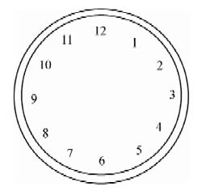
【答案】如图2所示。
利用“大小搭配”的想法，12和1配成一对，11和2配成一对，其余类推，共得6对，每相邻两对为一组，可以很快发现上面的解法。
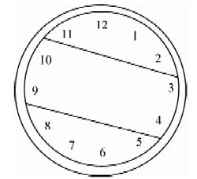
有一户人家，共有三个人：爸爸、妈妈和他们的独生儿子。妈妈比爸爸小两岁。说来真巧，今年全家的年龄加起来刚好是60岁，而四年前全家的年龄加起来刚好是50岁。现在他们家每个人的年龄各是多少呢？
这个问题的数字，听起来好像有点儿不对头。四年之前，每个人的年龄都应该比现在减少4岁，全家3个人，应该共计减少12岁。但是题目里却说，今年全家年龄的和是60岁，4年前全家年龄的和是50岁，总共只减少10岁。怎么会少减2岁呢？
毛病一定出在那小孩的身上。时间往前倒推4年，他的年龄并没有减4岁，而是打了折扣，少减了2岁。不是他不肯减那么多，是因为他不够减那么多，把他现在的年龄减光了，还差2岁，只好作罢。可见这个小孩今年只有2岁。
这样一来，今年父母年龄的和是：
60-2=58（岁）。
妈妈比爸爸小2岁，所以今年妈妈的年龄是：
（58-2）÷2=28（岁），
今年爸爸的年龄是：
28+2=30（岁）。
老爷爷和他的孙子们今年岁数都逢5：爷爷75，大孙子25，二孙子15，小孙子5岁。
爷爷说：“如果能看到你们三个人岁数加起来等于我的岁数，就好啦！”
孙子们一字一顿，齐声说：“一定能看到！”
爷爷听了眉开眼笑，孙子们也都乐滋滋合不拢嘴。什么事让他们这样开心呢？
当然是为他们这两句话所讲的事情高兴。
讲的是什么事呢？
讲到了把三个孙子的岁数加起来。加加看：
25+15+5=45（岁）。
爷爷今年75岁。今年爷爷的岁数比孙子们岁数总和大得多，相差30岁。
爷爷说的话，是希望能活到自己的岁数等于孙子们岁数总和的那一年。孙子们齐声祝福，说爷爷一定能活到那么久。
究竟要过多少年，爷爷的岁数才能等于孙子们岁数的和呢？
每过1年，爷爷增加1岁；孙子们每人增加1岁，3个孙子共增加3岁。所以，每过1年，孙子们年龄之和与爷爷年龄的差数缩小2岁。要能刚好赶上，需要的年数是：
（75-45）÷（3-1）=30÷2=15（年）。
15年后再相聚，老爷爷90大寿，大孙子40大寿，二孙子30大寿，小孙子20大寿。到那时，还不知该怎样热闹呢！
我们生活中时时刻刻都离不开“星期几”，现在给你介绍一个简便的计算方法——只记一个数，可知一个月。
记住一个“数”，这个“数”是上个月最后一天的星期数。根据这个“数”，我们就可以算出本月中任意一天是星期几。
公式为：（上月最后一天的星期数+本月某一天的日期数）÷7，余数是几，就是星期几（余数为0是星期日）。
比如上个月最后一天是星期日，那么这个月的12日是星期几？
因为（7+12）÷7=2……5，所以这个月的12日是星期五。
笔者以前到苏州去，在玄妙观地摊上买到一种玩具，非常奇妙。它共是一组五粒的骰子，每颗骰子都是一样大小，上面分别刻着数目字，却不是普通的1、2、3、4、5、6。第一粒骰子刻着：483、285、780、186、384、681；第二粒骰子刻着：642、147、840、741、543、345；第三粒骰子刻着：558、855、657、459、954、756；第四粒骰子刻着：168、663、960、366、564、267；第五粒骰子刻着：971、377、179、872、773、278。
现在请你们随便掷一掷，然后把面上的点数加起来，例如：483+147+855+663+278，由于这是五个三位数相加，因此即使用小型电子计算器来做也得要花一会功夫，然而，表演者却能在一二秒钟之内立即报出它的答数：2426。
假使你认为是巧合的话，那么不妨请你随便再掷几次，而他每次都能以出人意料的速度算出来。他用的什么办法呢？原来是：（1）将五粒骰子面上数字的末位数加起来；在上述例子中，它是26。（2）将50作为被减数，减去（1）项所得之数；在本例中，它是24。（3）将（2）项所得之数置于（1）项所得数之前；本例是2426。这样一来，很快就能够算出答数来了。
小明和小亮比赛爬楼梯。当小明爬到4层楼时，小亮刚好爬到3层楼。两个人都保持这样的速度，当小明爬到16层楼时，小亮刚好爬到第几层楼？
题目刚读完，立刻有人说：“12层！”
回答“12层”的朋友上当了，出题目的人开了一个小玩笑。正确答案不是12层，而是11层。
想一想爬楼的情形，就会明白，上4层楼爬3层楼梯，上3层楼爬2层楼梯。所以，小明和小亮的速度比，不是4∶3，而是3∶2。
当小明爬到16层楼时，走过了15层楼梯，这时小亮走过了10层楼梯，所以小亮刚好爬上第11层楼。
一只半母鸡在一天半里生一个半蛋，六只母鸡在六天里生几个蛋？
题目刚读完，立刻有人说：“6个蛋！”
不，正确答案不是6个，而是24个。
这题目读起来像绕口令，有意绕圈子，回答“6个蛋”的朋友被绕住了。
可以这样考虑。
先保持时间不变，从1.5只母鸡在一天半里生1.5个蛋，得到1只母鸡一天半生1个蛋，6只母鸡一天半生6个蛋。
再保持母鸡的只数不变，把时间从1.5天增加到6天，扩大为4倍，因而产蛋只数也要乘以4，6个变成24个。
所以，6只母鸡，在6天里，一共生24个蛋。
其实，从题型看，这个“鸡生蛋”趣题不过是普通的归一问题。它和下面一个板着面孔的问题属于同一类型，可用同样的方法解答：
用3台同样的织布机4小时可以织布150米。照这样计算，5台这样的织布机24小时可以织布多少米？
这是南京市鼓楼区小学毕业考试的一道试题，答案是1500米。
很多趣题不过是将普通习题、试题和竞赛题的题型撒上些味精和胡椒粉，重新包装，让人称赞“味道好极了”。通过趣题练解题，是一种有效的学习辅助手段，边玩边学，练了本领，又增加了兴趣。
蜻蜓有6条腿，2对翅膀；蜘蛛有8条腿，没有翅膀；蝉有6条腿、1对翅膀。现在有一些蜻蜓、蜘蛛和蝉，已知它们的总数是18只，共有118条腿，20对翅膀。其中每种昆虫各有多少只呢？
这道题的形式很像鸡兔同笼问题，但是复杂些，有三种动物搅在一起。可以尝试先把其中最容易区别的一种分离出来。
蜻蜓和蝉都有6条腿，只有蜘蛛是8条腿。所以第一步可以考虑6腿昆虫和8腿昆虫，这样就只剩两类，先求8腿昆虫的只数，就可以知道蜘蛛有多少了。
假定18只昆虫都是6条腿的蜻蜓和蝉，那么腿的总数将是6×18=108（条）。
实际上有118条腿，相差118-108=10（条）。
拿8条腿的蜘蛛进去换6条腿的蜻蜓或蝉出来，每换进一只蜘蛛，就增加2条腿，所以换进去的蜘蛛共有10÷2=5（只）。
这样就已求出，蜘蛛有5只。
现在可以进行第二步，求另外两种昆虫的数目。从昆虫总数中减去蜘蛛的只数，得到蜻蜓和蝉共有18-5=13（只）。
假定这13只都是蝉，那么它们的翅膀共有13对。实际上有20对，还差20-13=7（对）。
拿一只蜻蜓进去换一只蝉出来，增加一对翅膀，所以要换进7只蜻蜓，留下6只蝉。
最后得到，共有7只蜻蜓，5只蜘蛛，6只蝉。
如图，一位3米高的巨人，沿赤道环绕地球步行一周。那么他的脚底沿赤道圆周移动了一圈，他的头顶画出了一个比赤道更大的圆。
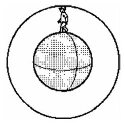
已知地球赤道的半径是6371千米。在这次环球旅行中，这位巨人的头顶比他的脚底多走了多少千米？
巨人的脚底走过的圆，半径是6371千米。
巨人的身高是3米，所以他的头顶走过的圆，半径增加3米。都用千米做长度单位，半径增加的数量就是0.003千米。
取圆周率的近似值为3.14，那么：
两圆周长的差=3.14×2×（6371+0.003）-3.14×2×6371
=3.14×2×0.003
=0.01884（千米）
=18.84（米）。
结论是：环绕地球一周，巨人的头顶只比脚底多走18.84米。
如果这位巨人打算再环绕月球表面步行一圈，那样一圈走下来，他的头顶比脚底多走了多少千米呢？
不必问月球赤道的半径是多大，也用不着做计算，头顶只比脚底多走的路程还是只有18.84米。因为在刚才解答环绕地球旅行的问题时，地球赤道的半径在计算过程中消去了，计算结果与脚底圆周的半径无关。
在下面的乘法算式里，每个汉字代表一个数字，不同的汉字代表不同的数字。这道算式的本来面目是什么呢？
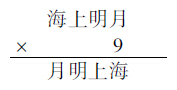
从千位上看，被乘数的首位数字“海”至少是1，乘积的首位数字“月”至多是9。而乘积是被乘数的9倍，所以：
海=1，月=9。
又因为被乘数的百位数字“上”乘以9不能进位，而个位数字“9”乘以9要向十位进8，所以：
上=0，明=8。
原来的算式是：
1089×9=9801。
学校在暑假里组织老师们集体游览风景名胜，回来以后，老师们很高兴，畅谈游览印象。
语文老师说，我的印象可以概括成一句话：
青山、碧水，劲松、千峰秀。
外语老师说，受你的启发，我的印象也可以概括成一句话：
秀峰、千松劲，水碧、山青。
外语老师受到的启发真不小，把语文老师那句赞美词整个儿倒过来读，就成了外语老师的赞美词。当然这也是一种绝妙的创造，因为不是任何一句话都能倒过来读的。
数学老师说，受你们两位的启发，我的印象同样可以概括成一句话：
864197532。
“这是什么话！”语文老师和外语老师大为惊讶，异口同声，喊了起来。
数学老师笑着说：“不明白我的意思？写下来就知道。”
只见数学老师不慌不忙，在纸上把三句话写出来，再画一道横线，添一个加号，成为一道加法算式：
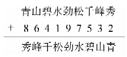
外语老师往数学老师肩上拍一掌，说：“还是算式谜？”
语文老师抢过笔来，一面研究算式，一面问道：“还是每个汉字表示一个数字，不同汉字表示不同数字？”
数学老师说：“对，老规矩。不过今天这道式子格外精巧，每一行的九位数里都是从1到9，一个数字不漏。”
答案很快求了出来，是：
123456789+864197532=987654321
数字、图形和数学题，同样来自生活，通过科学的抽象概括，揭示生活中的内在规律，蕴涵一种和谐的数学美。
如图3所示为一种九色地砖图样，它是由9种不同边长、不同颜色的正方形拼成的长方形图案。
图3图中每个正方形中间的数字或字母表示这个正方形的边长。最中间一个最小的正方形的边长是2，由于图形太小，不写进去了。
这些用字母a、b、c、d、e表示的正方形边长各是多少呢？
利用正方形的各边相等，从图得到：
e=5+2=7
c=e+2=7+2=9
b=c+16=9+16=25
a=33+5-2=36
d=33-5=28
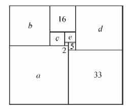
只有一些很特殊的长方形才能由若干边长各不相同的正方形不重不漏地拼合而成。这样的长方形叫做完全长方形。如图的长方形是一个边长为61和69的长方形。
在中国古典神话小说《西游记》里，说到唐僧和他的徒弟孙悟空、猪八戒、沙和尚去西天取经，在平顶山莲花洞消灭了想吃唐僧肉的妖怪金角大王和银角大王。然后师徒们继续赶路，又遇上一座巍峨险峻的大山。一面赶路，一面观景，不觉天色已晚。
故事发展到这里，小说中写道：
……师徒们玩着山景，信步行时，早不觉红轮西坠。正是：
十里长亭无客走，九重天上观星辰。
八河船只皆收港，七千州县尽关门。
六宫五府回官宰，四海三江罢钓纶。
两座楼头钟鼓响，一轮明月满乾坤。
这首诗从十、九、八、七，说到六、五、四、三、两、一，星月点缀夜色，收工了，下班了，关门了，路上没人了，取经赶路的也该找个地方休息了。
为了取经，跋山涉水已经苦不堪言，降妖伏魔更是险象环生，害得猪八戒想回家，唐僧心里直打鼓。幸好有孙悟空不断给一行人鼓劲，看看沿途深山老林幽静风光，放松放松。小说里这首写景诗，也正是在紧张情节中夹进一点轻松花絮，稍稍缓一口气。诗中嵌进全部十个数字，而且从大往小，倒过来数，成为别具一格的“倒数诗”，更增加了趣味。
《西游记》是明代吴承恩著的，问世已有400多年。按照我们现在数学里的习惯，用阿拉伯数字把诗中的各个数写出来，顺次排成一串，成为：
10 9 8 7 6 5 4 3 2 1
现在做一个数学小游戏：用上面写出的十个数，不打乱顺序，添加适当的数学符号，组成十个算式，使计算结果分别等于10、9、8、7、6、5、4、3、2、1。
要组成其中任意一个算式，是很容易的。要组成全套十个，就要动动脑筋。如果再使组成十个算式的手法有变化，就更有趣了。
可以组成很多满足条件的算式，下面是其中的一组：
10+9-8-7+6+5-4-3+2×1=10
（10+98-76）×5÷4÷（3+2）+1=9
（10+9+8-7）×6÷5÷4+3-2+1=8
（109-87）÷（6+5）+4+3-2×1=7
（10+9+8-7-6）×5-43-21=6
（10+9+8+7+6）÷5-4÷（3-2）+1=5
10×9-87+65-43-21=4
（109-8+7）÷6-54÷3+2+1=3
（109+87-6）÷5-4-32×1=2
（10×9-87）÷（6×54-321）=1
幼儿园买来一筐苹果，准备发给小朋友们。
如果分给大班的小朋友，每人5个苹果，那么还缺6个。
如果分给小班的小朋友，每人4个苹果，那么还余4个。
已知大班比小班少2位小朋友。这一筐苹果共有多少个呢？
根据条件，小班每人分4个苹果，在正常情况下，全班人到齐了，各人都把苹果拿到手里，最后筐里还剩4个。
现在设想在分苹果那天，小班有两位小朋友请假，那么这一天小班人数就和大班一样多了。这时小班里有两人不在场，如果也没有人帮他们代领，就有8个苹果发不出去，最后筐里将会剩下12个。
由此可见，如果这筐苹果给大班每人分4个，就会多余12个。又知道大班每人分5个时，不足6个。所以大班的人数是：
（12+6）÷（5-4）=18（人）。
这筐苹果的个数是：
5×18-6=84（个）。
这个幼儿园分苹果的问题，经过简化，归结成了熟知的盈亏问题。
盐是人人每天必需的物品。烧菜不放盐，就觉得淡而无味，现代人如此，古代人也不例外。中国古代数学书里，自然少不了有关盐的应用题。下面是明代数学家程大位《算法统宗》里的一道应用题：
四千三百五十（袋）盐，
大小船只要装全。
五百袋装三大只，
三百袋装四小船。
大小船只同只数，
折算须请众英贤。
题目的大意是说，有4350袋盐，把一些大船小船刚好装满。其中，每3只大船装500袋，每4只小船装300袋。大船和小船的只数相同。请各位有学问的朋友算一算，有多少只大船和小船？
因为大船和小船的只数相同，可将1只大船和1只小船配成1组，只需求出有多少组船。
从每4只小船装300袋盐，得到1只小船装的盐是：300÷4=75（袋）。
因而3只小船装的盐是：75×3=225（袋）。
又知道3只大船装500袋盐，所以3只小船和3只大船共计装盐225+500=725（袋）。
就是说，每3组船装725袋盐。总共有4350袋盐，所需船的组数是：4350÷725×3=18。
所以共有18只小船和18只大船。
小杂货店买进一批皮球，进价每只1.5元，卖出价每只2元。卖到只剩20只皮球时，开始让利，以9折售出。皮球全部卖完后，共得利润86元。这批皮球的总数是多少只？
这个问题，由于皮球有两种卖出价钱，给计算带来麻烦。如果全部统一价格，就容易算了。
设想最后20只不让利，价格就变得统一。
每只皮球原价2元，以9折价出售，每只让出的利润是2×（1-0.9）=0.2（元）。
20只让出的利润是0.2×20=4（元）。
所以，如果不让利，全部利润将是86+4=90（元）。
不让利时，每只皮球的利润是2-1.5=0.5（元）。
因而这批皮球的总数是90÷0.5=180（只）。
题目做完了，现在我们来帮助店老板算算账。
买进180只皮球，本钱是1.5×180=270（元）。
卖到剩下20只时，已经卖出了160只，已收回的货款是2×160=320（元）。
这时就已经把本钱全部捞回来，还净得利润320-270=50（元）。
剩下的20只，卖出去，无论得到多少钱，都属于纯利润。如果卖不出去，积压在店里，不能当钱用，还要占地方，不如让利促销。
以9折价卖出最后20只皮球，每卖出1只让利球，买球的人可以少付2角，得到一定实惠；而老板却能多得到1元8角纯利润。让利球很快卖完，店里卖球的利润也迅速从50元增长到86元。这样的让利销售，店家并不吃亏。
农贸市场里卖菜的小贩，也都有类似的经验。从清晨开始到市场卖菜，当拥挤的顾客逐渐散去，喧闹的市场趋向平静的时候，如果成本已基本收回，赶紧让利，高呼：“便宜了，便宜了，这点菜卖掉回家了！”
下面有一道古代意大利的数学题，是以果园为题材的。
一个人进果园采苹果。果园有七道门。出第一道门时，他给了看门人自己所采苹果的一半加一个苹果；出第二道门时，又给了看门人自己身边所有苹果的一半加一个苹果；以后的五道门也都照此办理。离开果园时，他只剩下一个苹果。他在果园里一共采了多少个苹果？
因为每过一道门都被看门人拿去当时苹果数目的一半再加一个，又知道走出第七道门离开果园时，只剩下1个苹果，所以未出第七道门时的苹果个数是（1+1）×2=4。
同理继续往前倒推，未出第六道门时的苹果个数是（4+1）×2=10。
未出第五道门时的苹果个数是（10+1）×2=22。
未出第四道门时的苹果个数是（22+1）×2=46。
未出第三道门时的苹果个数是（46+1）×2=94。
未出第二道门时的苹果个数是（94+1）×2=190。
未出第一道门时的苹果个数是（190+1）×2=382。
这样就得到，这个人在果园里一共采了382个苹果。
用符号▲表示金山，△表示银山。现在有金山和银山共200座，按照一定规律，排成一行：
▲▲△△▲△▲▲△△▲△▲▲……
其中共有多少座金山，多少座银山？
分析金山和银山排列的规律，可以概括为：
2金，2银，1金，1银；2金，2银，1金，1银……
由此可见，在这串宝山的行列中，6座一循环，每一循环里3金3银。共有200座宝山：
200÷6=33……2，
余下的2座零头都是金山。所以：
银山的数目是33×3=99，金山的数目是99+2=101。
答案是：共有101座金山，99座银山。
猜猜看，下面的括号里应该填什么数？
2，4，7，11，16，（ ）
这类填数问题，在游戏、智力测验和数学竞赛里都常遇到。填数之前，先要找出原来各数的排列规律。
试求每相邻两数之间的差，顺次得到2，3，4，5。
这样就看出规律来：后一个差总是比前面相邻的差增加1。所以，往排尾后面再添一个差，应该是6。
由此可见，括号里应该填的数，是22（16+2）。
换一个类似的游戏试试。
下面的括号里应该填什么数？
3，5，9，17，33，65，（ ）
试求每相邻两数之间的差，顺次得到2，4，8，16，32。
由此看出规律：后一个差总是前面相邻差的2倍。所以，往排尾后面再添一个差，应该是64。
由此可见，括号里应该填的数，是129（65+64）。
记号☆有5个角，用它来表示一个5位数。如果这个5位数满足等式：
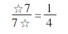
那么这个5位数是多少？
上面这个等式是说，把5位数☆后面加写数字7，得到一个6位数，作为分子；☆的前面加写数字7，也得到一个6位数，作为分母。约简以后，得到的分数值是14。把5位数☆从前往后各位数字顺次记为A、B、C、D和E，那么
ABCDE7×4=7ABCDE
从被乘数的末位数字7乘以4，得到乘积的末位数字是8，因而E=8；把E的值代进去，得到：
ABCD87×4=7ABCD8
从被乘数的末两位数字87乘以4，得到乘积的末位数字是48，因而D=4；把D的值代进去，得到：
ABC487×4=7ABC48
继续以上过程，顺次求得：
C=9，B=7，A=1
因而记号☆表示的5位数是：
☆=17948
儿童看见鹅，很容易着迷。那鹅披着一身洁白羽毛，走路摇摇摆摆，昂首高歌，悠然自得，实在可爱。这时，儿童身边的父母就会情不自禁，回想起自己小时候学会的一首诗：
鹅、鹅、鹅，
曲项向天歌。
白毛浮绿水，
红掌拨清波。
这是唐代才子骆宾王七岁时写的《咏鹅》诗。骆宾王后来由于声讨武则天的檄文而垂名史册，享誉文坛，这首童年作品《咏鹅》却在民间口头流传，世世代代的家长们像教儿歌一样把它传授给自己的小孩。
现在有一道关于鹅的题目，需要动一点点脑筋。
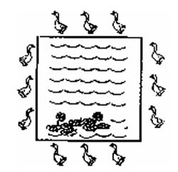
如图4，在正方形池塘周围，有一群鹅散步。它们共有12只，恰好在正方形的每条边上都有3只。牧鹅少年对他的4位小朋友说：“我到树荫下面躺一会儿，你们帮我看住这些鹅，池塘的每一边岸上都要保持3只。”
牧鹅少年很快进入梦乡。鹅群抵挡不住水的诱惑，有4只溜进池塘游泳去了。4位帮忙的朋友赶紧商量图5对策。能不能让游泳的鹅继续游泳，岸上的鹅又保持每边3只呢？
结果想出一个妙计：如图5，调动岸上的8只鹅，让它们在正方形的每个角上各站一只，每条边的中间各站一只，就能保持每条边上3只，同时又可任凭池中的4只鹅继续“白毛浮绿水，红掌拨清波”，两全其美。
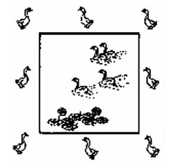
如图6，能不能在图中的各个小圆圈里分别填写数字2或3，使得每个大圆圈上4个数的和各不相同？
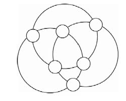
如果有一个大圆圈上4个数全填2，那么另外两个大圆圈上4个数的和一定相等，不满足问题要求。所以每个大圆圈上都不能把4个数全填成2。
同理，也不能有任何一个大圆圈上4个数都填3。
由此可见，要能满足问题的要求，必须在一个大圆圈上填一个2和三个3，另一个大圆圈上填两个2和两个3，还有一个大圆圈上填三个2和一个3。
按照这个方案试填，得到图7，完全满足要求。
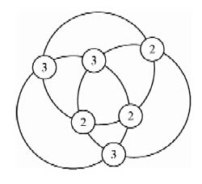
画一个三角形，在它的三个顶点和三边的中点各画一个小圆圈。然后把1、2、3、4、5、6分别填写到这6个小圆圈里，使三角形每条边上3个数的和都相等。
通过尝试，容易得到满足要求的填法，而且不止一种。例如可以填成图8或图9。
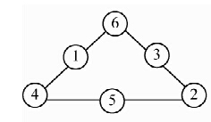
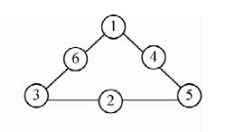
在图8中，每一边上3个数的和都是11；而在图9中，每一边上3个数的和都是10。
能不能找到一种填法，使各边上3个数的和不但相等，而且达到最大？或者，能不能使各边上3个数的和不但相等，而且达到最小？
在计算一边上各数的和时，角上的每个数都在两条边里出现，因而被重复计算一次。要使每边上3个数的和最大，只要使填在角上被重复计算的3个数达到最大，所以应该把4、5、6填在角上，结果得到图10，其中每边3个数的和是12。
类似地，要使每边上3个数的和最小，只要把1、2、3填在角上，结果得到图11，其中每边3个数的和是9。
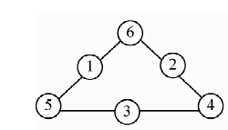
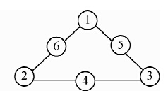